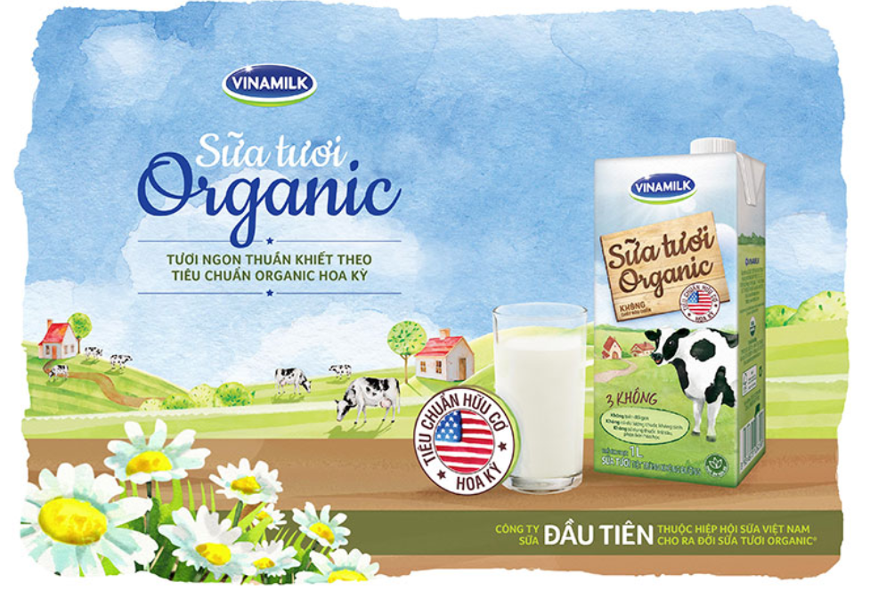
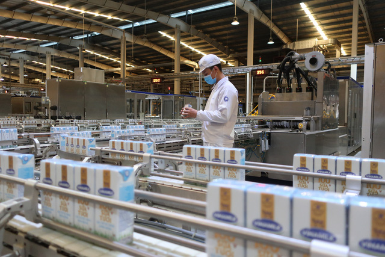
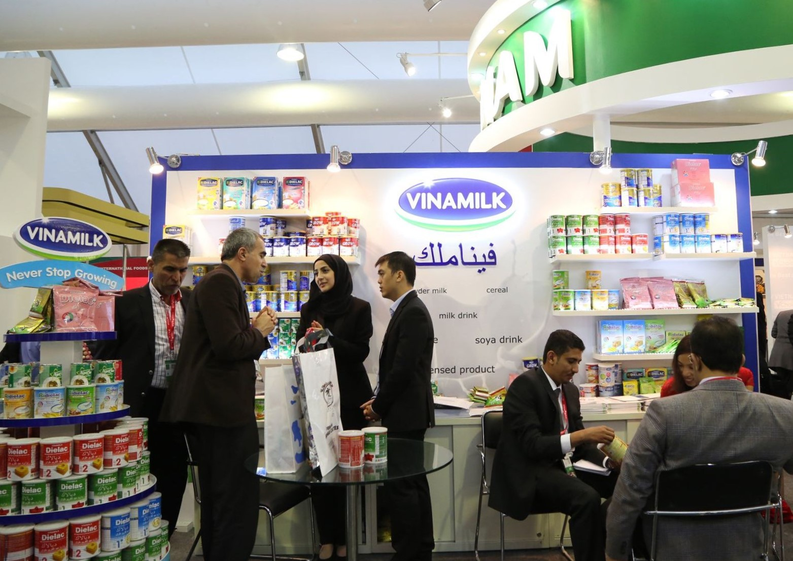
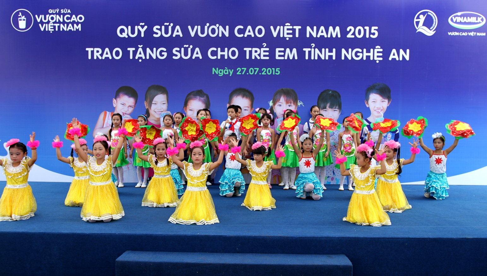

Giới thiệu về công ty Vinamilk

- Năm 1976: Vinamilk ra đời.Ngày 20/08/1976, Vinamilk được thành lập dựa trên cơ sở tiếp quản 3 nhà máy sữa do chế độ cũ để lại, gồm:
Nhà máy sữa Thống Nhất (tiền thân là nhà máy Foremost).
Nhà máy sữa Trường Thọ (tiền thân là nhà máy Cosuvina).
Nhà máy sữa Bột Dielac (tiền thân là nhà máy sữa bột Nestle') ( Thụy Sỹ).
- Năm 1995: Khánh thành Nhà máy sữa đầu tiên ở Hà Nội.
- Năm 2001: Khánh thành Nhà máy sữa Cần Thơ.
- Năm 2003: Khánh thành Nhà máy sữa Bình Định và Sài Gòn
- Năm 2006: Khánh thành trang trại bò sữa đầu tiên tại Tuyên Quang.
- Năm 2008: Khánh thành trang trại bò sữa thứ 2 tại Bình Định.
- Năm 2009: Vinamilk xây dựng trang trại bò sữa thứ 3 tại Nghệ An.
- Năm 2010: Phát triển đến New Zealand và hơn 20 nước khác.Vinamilk xây dựng Trang trại bò sữa thứ 4 tại Thanh Hóa.
- Năm 2012: Khánh thành nhiều nhà máy hiện đại.
Vinamilk xây dựng trang trại bò sữa thứ 5 tại Lâm Đồng.
- Năm 2013: Khởi công xây dựng trang trại bò sữa Tây Ninh và Hà Tĩnh.
Khánh thành siêu nhà máy sữa Bình Dương.
- Năm 2014: Vinamilk 38 năm đổi mới và phát triển: Thương hiệu Vinamilk đã trở nên quen thuộc với người tiêu dùng trong và ngoài nước sau 38 năm không ngừng đổi mới và phát triển. Vinamilk đã và đang tiếp tục khẳng định mình với tinh thần luôn cải tiến, sáng tạo, tìm hướng đi mới để công ty ngày càng lớn mạnh.
- Năm 2015: Khởi công xây dựng trang trại bò sữa Thống Nhất - Thanh Hóa.
Tăng cổ phần tại công ty sữa Miraka tại New Zealand.
- Năm 2016: 40 năm Vươn cao Việt Nam: Cột mốc đánh dấu hành trình 40 năm hình thành và phát triển của Vinamilk (1976 – 2016) để hiện thực hóa "Giấc mơ sữa Việt” và khẳng định vị thế của sữa Việt trên bản đồ ngành sữa thế giới.
Sản phẩm Sữa tươi Vinamilk Organic chuẩn USDA Hoa Kỳ.
Sở hữu của Vinamilk tại Driftwood lên 100%.
Khánh thành nhà máy sữa Angkormilk được đầu tư bởi Vinamilk.
Chính thức ra mắt thương hiệu Vinamilk tại Myanmar, Thái Lan.
- Năm 2017: Khánh thành trang trại bò sữa Organic.
Ra mắt Sữa tươi 100% Organic.
Vinamilk được xếp vào danh sách Global 2000: Một trong 2000 công ty niêm yết lớn nhất thế giới và là công ty hàng tiêu dùng nhanh duy nhất của Việt Nam lọt vào danh sách này, với doanh thu và vốn hóa lần lượt là 2,1 tỷ USD và 9,1 tỷ USD.
- Năm 2018: Khánh thành tổ hợp trang trại bò sữa công nghệ cao Thống Nhất - Thanh Hóa.
- Năm 2019: Khánh thành trang trại Bò Sữa Tây Ninh.
Khởi công dự án tổ hợp trang trại bò sữa Organic Vinamilk Lao-Jagro tại Lào.
Vinamilk thuộc Top 200 công ty có doanh thu trên 1 tỷ đô tốt nhất Châu Á Thái Bình Dương (Best over a billion): Danh sách do tạp chí Forbes Châu Á lần đầu tiên công bố. Trong đó, Vinamilk là đại diện duy nhất của Việt Nam trong ngành thực phẩm, "sánh vai” cùng những tên tuổi lớn của nền kinh tế khu vực.
Tầm nhìn, sứ mệnh.
Tầm nhìn: ‘Trở thành biểu tượng niềm tin số 1 Việt Nam về sản phẩm dinh dưỡng và sức khỏe phục vụ cho cuộc sống con người”.Sứ mệnh: ‘Vinamilk cam kết mang đến cho cộng đồng nguồn dinh dưỡngtốt nhất, chất lượng bằng chính sự trân trọng, tình yêu và trách nghiệm cao của mình với cuộc sống con người và xã hội này”.
Lĩnh vực hoạt động và sản phẩm chủ yếu:

- Lĩnh vực hoạt động: • Sản xuất và kinh doanh sữa hộp, sữa bột, bột dinh dưỡng và các sản phẩm từ sữa khác.
• Sản xuất và kinh doanh bánh, sữa đậu nành, nước giải khát.
• Kinh doanh thực phẩm công nghệ, thiết bị phụ tùng, vật tư, hóa chất và nguyên liệu.
• In trên bao bì.
• Sản xuất và mua bán các sản phẩm nhựa (trừ tái chế phế thải nhựa).

- Sản phẩm chủ yếu: • Sữa nước: Sữa tươi 100%, sữa tiệt trùng bổ sung vi chất, sữa tiệt trùng, sữa organic, thức uống cacao lúa mạch với các nhãn hiệu ADM GOLD, Flex, Super SuSu.
• Sữa chua: sữa chua ăn, sữa chua uống với các nhãn hiệu SuSu, Probi, ProBeauty.
• Sữa bột: sữa bột trẻ em Dielac, Alpha, Pedia, Grow Plus, Optimum Gold, bột dinh dưỡng Ridielac, sữa bột người lớn như Diecerna đặc trị tiểu đường, SurePrevent, CanxiPro, Mama Gold.
• Sữa đặc: Ngôi Sao Phương Nam (Southern Star) và Ông Thọ.
• Kem và phô mai: kem sữa chua Subo, kem Delight, Twin Cows, Nhóc Kem, Nhóc Kem Ozé, phô mai Bò Đeo Nơ
• Sữa đậu nành - nước giải khát: nước trái cây Vfresh, nước đóng chai Icy, sữa đậu nành GoldSoy
Hoạt động nổi bật
CÁC HOẠT ĐỘNG CỦA QUỸ BẢO TRỢ TRẺ EM VIỆT NAM Các hoạt động hỗ trợ, giúp đỡ tập trung vào 4 nhóm quyền trẻ em theo Công ước Quyền trẻ em đó là: Quyền được sống, Quyền được phát triển, Quyền được bảo vệ và Quyền được tham gia.1. Hỗ trợ thực hiện quyền được sống:Bao gồm các dự án về dinh dưỡng, y tế, các nhu yếu phẩm cần thiết đảm bảo cuộc sống của trẻ em, như: Chương trình "Vì ánh mắt trẻ thơ” (phẫu thuật cho trẻ em bị dị tật mắt bẩm sinh), chương trình "Vì trái tim trẻ thơ” (phẫu thuật cho trẻ em bị dị tật tim bẩm sinh), chương trình "vững bước em đi” (phẫu thuật dị tật vận động), phẫu thuật nụ cười và luyện âm cho trẻ sau phẫu thuật, chương trình xây dựng trung tâm phục hồi chức năng cho trẻ em khuyết tật tại cộng đồng, chương trình hỗ trợ các công trình nước sạch và vệ sinh.
2. Hỗ trợ thực hiện quyền được phát triển:Bao gồm các chương trình: Cấp học bổng cho trẻ em nghèo học giỏi, con thương binh, liệt sĩ, trẻ em dân tộc thiểu số, vùng sâu, vùng xa; Cấp xe đạp cho trẻ em có hoàn cảnh khó khăn; Xây dựng lớp học mầm non, lớp học tình thương, lớp học cho trẻ em những vùng sâu, vùng xa, vùng đặc biệt khó khăn; Xây dựng nhà nội trú cho trẻ em vùng sâu, vùng xa, vùng đặc biệt khó khăn.
3. Hỗ trợ thực hiện quyền được bảo vệ:Bao gồm các chương trình: Hỗ trợ cấp cặp phao cứu sinh cho trẻ em vùng sông nước; Hỗ trợ cấp xe lăn cho trẻ khuyết tật; Hỗ trợ thiết bị trợ thính cho trẻ em khiếm thính; Bảo trợ dài hạn cho trẻ em có hoàn cảnh khó khăn học giỏi.
4. Hỗ trợ thực hiện quyền được tham gia:Bao gồm các chương trình: Hỗ trợ xây dựng điểm vui chơi cho trẻ em vùng sâu, vùng xa, vùng khó khăn; Tổ chức sự kiện nhân dịp Tết Nguyên Đán, ngày Quốc tế thiếu nhi 1/6, Trung thu…
